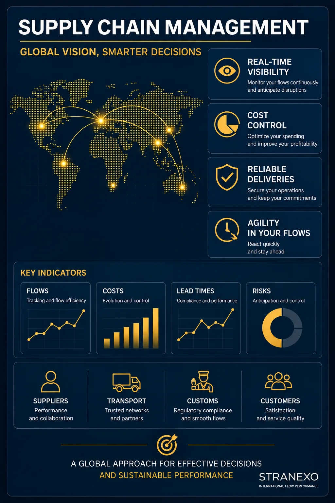

Your growth changes the equation: flows become more complex, decisions become more strategic, and the organization you had in place in Europe starts showing its limits — often just as it becomes harder to manage from your US headquarters. Hiring a full-time Director on the ground isn't always the right answer, or the right moment.
STRANEXO's Fractional Supply Chain / Logistics / Transport Leadership lets you quickly access leadership expertise tailored to your needs and your pace, with someone based in Europe. Depending on your organization, this can take the form of a part-time Supply Chain Director, a part-time Logistics Director, or a part-time Transport Director.
I work alongside your leadership team to structure your organization, strengthen the management of your Supply Chain, logistics or transport, and durably improve the performance of your flows in Europe. Your company remains the sole principal and direct contracting party with its carriers; I do not act as a freight forwarder.

Your company is growing fast and your Supply Chain organization in Europe needs to mature to durably support that growth.
The usual levers (one-off renegotiation) are no longer enough to contain rising transport costs.
Domestic, European, international: your providers keep multiplying without centralized management.
A key person leaves the company or is unavailable. You need leadership expertise to keep your operations running.
Your flows are becoming more complex to coordinate and require a local, global view of your organization.
You want to structure your Supply Chain, logistics or transport before creating a permanent position or before a new phase of growth.
You're looking for strategic, flexible support tailored to your needs, without the overhead of a full-time hire.
Fractional Leadership isn't about stepping in occasionally on an isolated topic. My role is to support your leadership team in structuring, managing and evolving your Supply Chain, logistics or transport organization in Europe.
I evaluate and secure your carrier panel, drawing on hands-on experience in sourcing, compliance and transport risk management. I define governance standards with your teams for your operations.
I bring an outside perspective, a global view of your flows and hands-on experience to help you make the right decisions, coordinate the players in your Supply Chain and durably support your company's growth in Europe.
Every engagement is built around your priorities, with one simple goal: strengthen your organization while growing your teams' capabilities. Depending on the mandate, this can include periodic oversight of your transport or logistics team, alongside your HR organization.
You get a clearer view of your flows, your costs, your priorities and your improvement levers — even from thousands of miles away.
Roles, responsibilities, processes and your carrier panel gain consistency, strengthening your operational efficiency.
Different teams work more smoothly around shared objectives, across time zones.
You reduce your operational and regulatory risk through better control over your providers' compliance in Europe.
You rely on reliable indicators to manage your performance with greater visibility, wherever you're based.
Your organization evolves at the pace of your company without creating disruption in your operations.
Every company has its own history, its own constraints and its own priorities. I adapt my support accordingly.
I work a few days a month, over a defined period or as part of a more regular engagement, depending on your priorities at the time.
Tracking costs, lead times and performance across your flows, from your Supply Chain to your transport, at every geographic scale.
Depending on your context, this engagement can also address a need for fractional Supply Chain leadership, fractional Logistics leadership, or fractional Transport leadership, when one of these areas is your main priority.
Supporting the structuring of a fast-growing SME's Supply Chain to durably sustain its development.
Overseeing, over time, the performance and regulatory compliance of an existing carrier panel.
Defining operational standards and a non-conformity tracking process for a multi-site transport organization.
Leading a logistics, transport or Supply Chain transformation project (ERP or TMS rollout) and supporting teams through the change.
Supporting the internationalization of flows and organizations to strengthen control over them.
Supporting the development of a future Supply Chain, Logistics or Transport lead and durably strengthening the organization.
No. I work only in advisory and management support. Your company remains the sole principal and direct contracting party with the carriers.
A consultant typically works on a specific issue or a one-off assignment. Fractional Leadership supports your company over the long run, with a global view of your organization in order to structure it, coordinate it and help it progress.
Transport is a targeted assignment aimed at analyzing a situation and supporting the implementation of improvement levers. Fractional Leadership consists of supporting the management of your organization over the long run, a few days a month.
No. The principle is to adapt the time commitment to your company's real needs. A few days a month is often enough to bring leadership-level expertise, while keeping a high degree of flexibility.
No. My role is to bring an outside view, contribute to the thinking, facilitate trade-offs and support the implementation of decisions. Strategic choices remain with your leadership team.
I offer a first 30-minute call to understand your organization, your challenges and identify whether this type of support fits your needs.
📞 +33 7 68 62 13 03
✉️ axel@stranexo.com